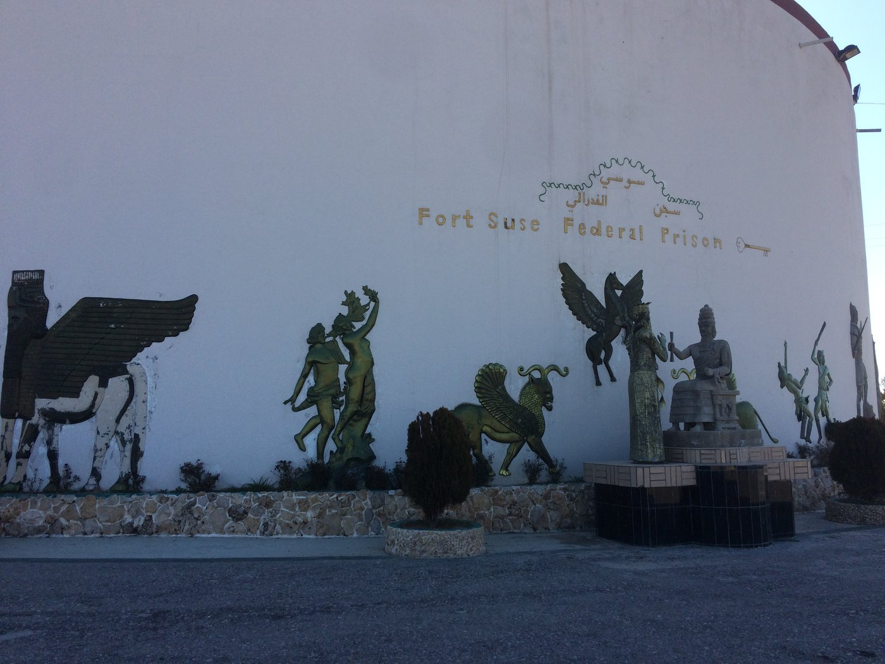

Kristen Kao & Mara R. Revkin
67 American Journal of Political Science 358–373 (2023)
Abstract
Armed groups seeking to govern territory require the cooperation of many civilians, who are widely perceived as enemy collaborators after conflict ends. The empirical literature on attitudes toward transitional justice focuses heavily on fighters, overlooking more nuanced understandings of proportional justice for civilian collaborators. Through a survey experiment conducted in an Iraqi city that was controlled by the Islamic State, we find that variations in the type of collaboration an actor engages in strongly determine preferences for punishment and forgiveness. While exposure to violence is associated with a greater desire for revenge, perceived volition behind an act—a relatively unstudied factor—is much more important. This research provides unique empirical data on the microfoundations of enemy collaborator culpability. By widening our analytical lens to consider a more realistically broad spectrum of enemy collaboration, we avoid affirming a false dichotomy between victims and perpetrators that is commonly adopted in postwar settings.
Download the PDF from the Duke Law Scholarship Repository →
Repository record →
Photographs from this research
Fort Suse Federal Prison in northern Iraq, and a drawing by a displaced child from Mosul.

The entrance to Fort Suse Federal Prison (سجن سوسي الفدرالي), northern Iraq (Revkin 2017)

A child’s drawing of life under the Islamic State, captioned “ISIS and terrorism” (داعش ويا الارهاب), near Mosul (Revkin 2017)
Back to Research Areas. All photographs by Mara Revkin.